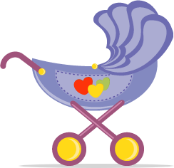

Pregnancy is one of the most extraordinary adventures in the life of a woman. And having a child is a big decision for a couple to make. It is entirely normal to have questions and doubts, like with any new and exciting experience!
Perhaps you are wondering if you are ready. Or maybe you are thinking about your new nutritional requirements and keeping your body in shape. Here you can find some clear and practical advice on taking care of yourself mentally and physically during this precious time.

Just read My changing body. It will help you anticipate and deal with these changes more easily.
Now that you are pregnant, maintaining a balanced diet will become a major preoccupation. But this isn't a reason to worry. To eat healthily, all you have to do is to remember these few tips.